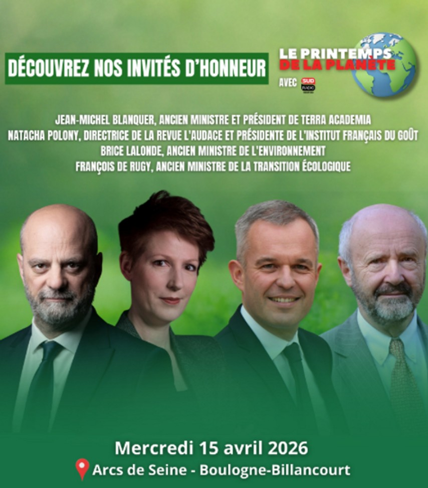

Le 15 avril 2026, Sud Radio réunissait à Boulogne-Billancourt un ensemble d'acteurs rarement présents autour de la même table : industriels, énergéticiens, constructeurs automobiles, acteurs du bâtiment, financiers et experts du numérique. Un exercice particulièrement utile à un moment où la transition écologique n'est plus une question de conviction — mais d'exécution.

Premier enseignement
La transition est engagée, mais elle avance de manière désynchronisée selon les secteurs. L'énergie, la mobilité, le bâtiment et la finance verte évoluent à des rythmes très différents — avec des dépendances croisées que personne ne pilote de façon coordonnée.
Une électrification inévitable… mais progressive
Un consensus fort se dégage : les systèmes énergétiques de demain seront largement électrifiés. La trajectoire semble désormais claire par secteur :
- Le chauffage est en phase d'accélération — pompes à chaleur, réseaux de chaleur décarbonés
- Le transport suit, porté par les politiques publiques et l'innovation industrielle
- L'industrie lourde (acier, procédés thermiques) reste le principal défi de la décennie
Mais l'enjeu ne se limite plus à produire de l'électricité décarbonée. Il faut aussi la piloter. Gestion technique du bâtiment, flexibilité, pilotage des usages : ces briques deviennent structurantes pour optimiser les systèmes énergétiques à l'échelle des sites et des territoires.
Mobilités : les données qui changent la perspective
Sur la mobilité électrique, plusieurs données ont marqué les échanges :
- La France approche les 300 000 points de charge publics — un réseau encore insuffisant en densité rurale
- Le coût des véhicules électriques a diminué de 40 % entre deux générations, rendant la parité proche pour de nombreux segments
- La pollution particulaire en milieu urbain présente une forte variabilité locale ("canyons de pollution") que la mobilité électrique seule ne résout pas entièrement
- L'impact des particules ultra-fines issues de la combustion de biomasse (chauffage au bois) est sous-estimé dans les arbitrages de politique publique
Bâtiment : entre ambition climatique et réalité opérationnelle
Le secteur du bâtiment concentre à la fois les plus grandes opportunités et les contraintes les plus complexes. Les débats ont rappelé plusieurs réalités souvent sous-estimées :
Numérique et IA : levier d'accélération systémique
L'un des sujets émergents concerne le rôle du numérique et de l'intelligence artificielle dans la transition. Au-delà des cas d'usage classiques (optimisation énergétique des datacenters, analyse de données), certaines pistes ouvrent des perspectives plus larges :
- Automatisation du suivi réglementaire (Décret Tertiaire, bilans carbone, reporting CSRD)
- Harmonisation des données entre acteurs d'une même chaîne de valeur
- Optimisation temps réel de la flexibilité énergétique à l'échelle des parcs
La condition : conserver un cadre de gouvernance humain. L'IA comme levier d'accélération, pas comme substitut à l'expertise sectorielle.
Finance verte : entre rentabilité et nécessité
Le débat autour de la finance verte reste structurant. La question posée est tranchante : la finance verte doit-elle être rentable pour exister, ou doit-elle être soutenue pour répondre à l'urgence climatique ?
La conclusion pragmatique qui émerge : pas de passage à l'échelle sans modèle économique viable. Les projets qui combinent performance environnementale et rendement attractif sont les seuls à attirer des capitaux privés à grande échelle. C'est le seul chemin réaliste vers la massification.

La conclusion claire : le défi est désormais organisationnel
Au-delà des technologies, des financements ou des réglementations, un enseignement ressort clairement de cette journée : les solutions existent. Les technologies sont disponibles, les cadres réglementaires se précisent, les financements se mobilisent.
Mais la coordination entre énergie, mobilité, bâtiment, finance et numérique reste insuffisante. Les acteurs agissent en silos, avec des horizons temporels et des logiques d'incitation qui ne s'alignent pas naturellement.
C'est précisément là que réside la valeur d'événements comme le Printemps de la Planète : faire dialoguer des acteurs qui, dans leur quotidien opérationnel, n'ont pas de raison naturelle de se parler. Car c'est souvent dans ces échanges que se construisent les projets transversaux et les coalitions qui font bouger les lignes.